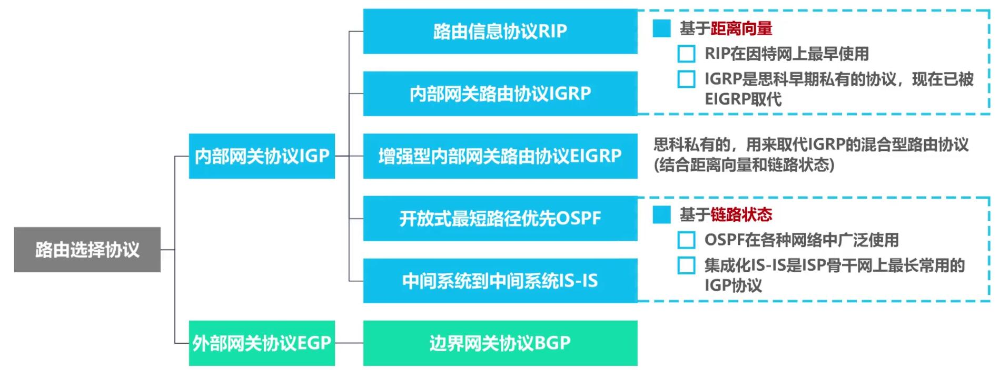
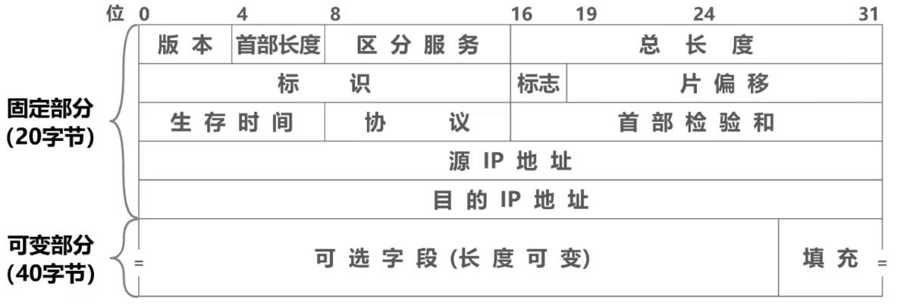

计算机网络-网络层
IPv4地址：给因特网上的每一台主机或路由器的每一个接口分配一个在全世界范围内唯一的32比特标识符。 - 点分十进制表示方法：XXX.XXX.XXX.XXX； ## 一、历史发展 #### 1. 分类编制的IPv4地址 分类： - A类：0开头，8位网络号+24位主机号 - B类：10开头，16位网络号+16位主机号 - C类：110开头，24位网络号+8位主机号 - D类：1110开头，多播地址 - E类：1111开头，保留 注意事项： - 只有A； - 主机号为“全0”的地址是网络地址，主机号为“全1”的地址是广播地址， 不能分配给主机或路由器的各接口； - A类网络号0和127不可分配给主机或路由器的各接口； #### 2. 划分子网的IPv4地址 为新增网络申请新的网络号会浪费大量IP地址，借用主机号的一定位数来作为子网号，区分不同子网，以减少IP地址的浪费。 - 子网掩码：使用连续的比特1来对应网络号和子网号，连续的比特0来对应主机号。 - 将划分子网的IPv4地址与其相应的子网掩码进行逻辑与运算就可得到IPv4地址所在子网的网络地址； - 可划分的子网数量由子网号位数决定，每个子网可分配的IP地址数量由主机号位数决定； #### 3. 无分类编制的IPv4地址 无分类域间路由选择CIDR：消除了传统A/B/C类地址以及划分子网的概念。 - 使用“斜线记法”，即在IPv4地址后面加上斜线“/”，在斜线后面写上网络前缀所占的比特数量； 路由聚合（构造超网）：找共同前缀 - 网络前缀越长，地址块越小，路由越具体； - 最长前缀匹配：若路由器查表转发分组时发现有多条路可选，则选择网络前缀最长的那条； ## 二、IPv4地址的应用 #### 1. IPv4地址的应用规划 定长的子网掩码FLSM：使用同一个子网掩码来划分子网，所有子网的网络前缀长度一致，会造成IP地址的浪费。 变长的子网掩码VLSM：使用不同的子网掩码来划分子网，每个子网所分配的IP地址数量可以不同，更加灵活。 #### 2. IP数据报的发送和转发过程 主机发送IP数据报： - 首先判断目的主机是否与自己在同一个网络（子网掩码）； - 若在同一个网络，则直接交付，否则通过所在网络的默认网关（路由器）转发； 路由器转发IP数据报： - 首先检查IP数据报首部是否出错； - 根据IP数据报的目的地址在路由表中查找匹配的条目并通过相应接口转发； - 路由表：记录各接口网络地址及子网掩码，若子网掩码和目的地址相与等于对应网络地址，则通过相应接口转发； #### 3. 静态路由配置与路由环路问题 静态路由配置：用户或网络管理员使用路由i去相关指令给路由器人工配置路由表。一般用于小规模网络。 - 静态路由配置：目的网络+下一跳+类型（记录要到达目的网络下一跳需要转发到哪里）； - 默认路由：因特网中网络众多，可以添加目的网络地址0.0.0.0（视为网络前缀长度为0的网络地址），没有记录的网络地址都将从这里转发； - 特定主机路由：将特定主机的IP地址设为目的网络（视为网络前缀为32的网络地址）； - 转发时优先选择网络前缀最长的； 静态路由配置可能导致路由环路问题： - 配置错误：会导致死循环，可以设置生存时间TTL字段； - 聚合了不存在的网络：目的网络中实际IP地址数量小于最大IP地址数量，有部分IP地址不存在但会错误转发，可以添加黑洞路由解决； - 网络故障：可以将故障的IP地址设为黑洞路由； ## 三、路由选择协议 动态路由选择：路由器通过路由选择协议自动获取路由信息。 - 复杂开销大，能适应不同的网络状态，适用于大规模网络； - 特点：自适应、分布式、分层次。 分层次：内部网关协议IGP（IRP）和外部网关协议EGP（ERP）；  路由器的基本结构: - 路由表：收到路由报文后，会将信息记录到路由表中； - 根据路由表得到易于查找的转发表； - 收到数据分组后，则根据转发表查表转发； - 路由选择处理机存储路由表，还会周期性地给其他路由器发送自己所知道的路由信息； - 缓存区：输入/输出缓冲区用来暂存分组； #### 1. RIP RIP要求自治系统AS内的每一个路由器都要维护从它自己到AS内其他每一个网络的距离记录。 - 基于距离向量，使用“跳数”来衡量距离，距离等于16相当于不可达，因此只适用于小型互联网； - RIP认为好的路由就是“距离短”的路由，即通过路由器数量最少的路由（不考虑传输速率）。 - 当到达同一目的网络有多条距离相等的路由时，可以进行等价负载均衡； RIP基本工作过程： - 刚开始工作时，进知道自己到直连网络的距离为1； - 每个路由器仅和相邻路由器周期性地交换并更新路由信息； - 若干次交换更新后，每个路由器都知道到达本AS内各网络的最短距离和下一跳地址，称为“收敛”； RIP存在“坏消息传播得慢”的问题，可能导致路由环路。可以采用以下方法缓解： - 限制最大路径距离为15； - 触发更新：当路由表发生变化就立即发送更新报文； - 水平分割：让路由器记录收到某特定路由信息的接口，而不让同一路由信息再通过此接口反方向传送； #### 2.开放最短路径优先OSPF OSPF基于链路状态（即本路由器都和哪些路由器相邻以及相应链路的“代价”），使用了Dijkstra提出的最短路径算法SPF。 - “代价”用来表示费用、距离、时延、带宽等； - 每个使用OSPF的路由器都会产生链路状态通告LSA，包含直连网络的状态信息和邻居路由器的状态信息，并有一个“链路状态数据库LSDB”用于存储LSA； - LSA被封装在链路状态更新分组LSU中，采用洪泛法发送； - 各路由器的LSDB最终将达到一致； - 各路由器基于LSDB进行最短路径优先SPF计算，构建各自的路由表； OSPF有以下五种分组类型： - 问候分组：用来发现和维护邻居路由器的可达性； - 数据库描述分组：发送给邻居路由器； - 链路状态请求分组：发现链路状态缺失时向邻居路由器发送； - 链路状态更新分组：洪泛发送； - 链路状态确认分组：对链路状态更新分组的确认； OSPF在多点接入网络中路由器邻居关系的建立： - 选举指定路由器DR和备用的指定路由器BDR； - 所有的非DR/BDR只与DR/BDR建立邻居关系，非DR/BDR之间通过DR/BDR交换信息； 为了使OSPF能够用于规模很大的网络，OSPF把一个自治系统再划分为若干个更小的范围，叫做区域。 - 减少了整个网络上的通信量； #### 3. 边界网关协议BGP 用于自治系统之间的路由选择，工作原理如下： - 再配置BGP时，每个自治系统的管理员选择至少一个路由器作为该自治系统的“BGP发言人”； - 不同自治系统的发言人通过建立TCP连接交换路由信息，使用TCP连接交换路由信息的两个BGP发言人称为对方的邻站或对等站； - BGP发言人交换网络可达性的信息，并根据所采用的策略从收到的路由信息中找出到达各自治系统较好的路由，即构造不存在贿赂的自治系统连通图（树形结构）； BGP-4有以下四种报文： - OPEN报文：用来与相邻的另一个BGP发言人建立关系； - UPDATE报文：用来发送通过某一路由的信息，以及列出要撤销的多条路由； - KEEPALIVE报文：周期性地证实邻站的连通性； - NOTIFICATION报文：发送检测到的错误； ## 四、IPv4数据报的首部格式  版本字段：表示IP协议版本，如IPv4； 首部长度：取值为首部长度字节数/4； 区分服务字段：根据不同取值获得不一样的服务质量，一般不用； 总长度：IP数据报的字节数（包含首部）； 标识：属于同一个数据报的各分片数据报具有相同标识（按计数器）； 标志：3个比特，DF位表示允许分片，MF位表示后面是否还有分片，保留位为0； 片偏移：分片数据报的数据载荷部分从原数据报的第几个字节开始（字节位置除以8，第一个分片为0）； 生存时间TTL：每一跳-1，归零后丢弃，防止死循环； 协议：表明数据部分是何种协议数据单元（如TCP、UDP、ISPF、IPv6）； 首部检验和：用来检测首部在传输过程是否出现差错； 可选字段：用来支持排错、测量及安全等措施，很少使用； ## 五、网际控制报文协议 为了更有效地转发IP数据报和提高交付成功的机会，在网际层使用了网际控制报文协议ICMP。 - 主机或路由器使用ICMP来发送差错报告报文和询问报文； - ICMP报文被封装在IP数据报中发送； ICMP差错报告报文共有五种： - 终点不可达：当路由器或主机不能交付数据报时，就像源点发送终点不可达报文； - 源点抑制：当路由器或主机由于拥塞而丢弃数据报时，就向源点发送源点抑制报文； - 时间超过：生存时间TTL字段减到0时发送； - 参数问题：通过首部检验和字段发现首部字段出现误码时发送； - 改变路由（重定向）：路由器把改变路由报文发送给主机，让主机知道下次应将数据报发给另外的路由器； ICMP询问报文有以下两种： - 回送请求和回答：用来测试目的站是否可达及了解有关状态； - 时间戳请求和回答：请某个主机或路由器回答当前的日期和时间，用来进行时钟同步和测量时间； ICMP应用举例 - 分组网间探测PING：用来测试主机或路由器之间的连通性； - 跟踪路由：用来测试IP数据报从源主机到达目的主机要经过哪些路由； ## 六、虚拟专用网VPN和网络地址转换NAT 虚拟专用网VPN：利用因特网作为本机构各专用网之间的通信载体。 - 各主机地址使用私有地址（只能作为本地地址）； - 加密并通过路由器发送； - 同一机构不同部门的内部网络构成的虚拟专用网称为内联网VPN，有时某些外部机构参加进来，称为外联网VPN； 网络地址转换NAT：使用NAT路由器将私有地址转换成全球IP地址，缓解IPv4地址空间即将耗尽的问题。 - 使用私有地址的主机发送IP数据报； - NAT路由器修改IP数据报的IP地址为全球IP地址； - 记录私有地址和全球IP地址的对应关系，并转发IP数据报； - 一个NAT路由器可连接多台主机； - NAT路由器接收外部发来的数据报，并根据转换表转发给主机； - 可以利用运输层的端口号和IP地址一起进行转换，这样一个全球IP地址就可以使多个拥有本地地址的主机同时和因特网上的主机进行通信，称为网络地址与端口号转换NAPT；